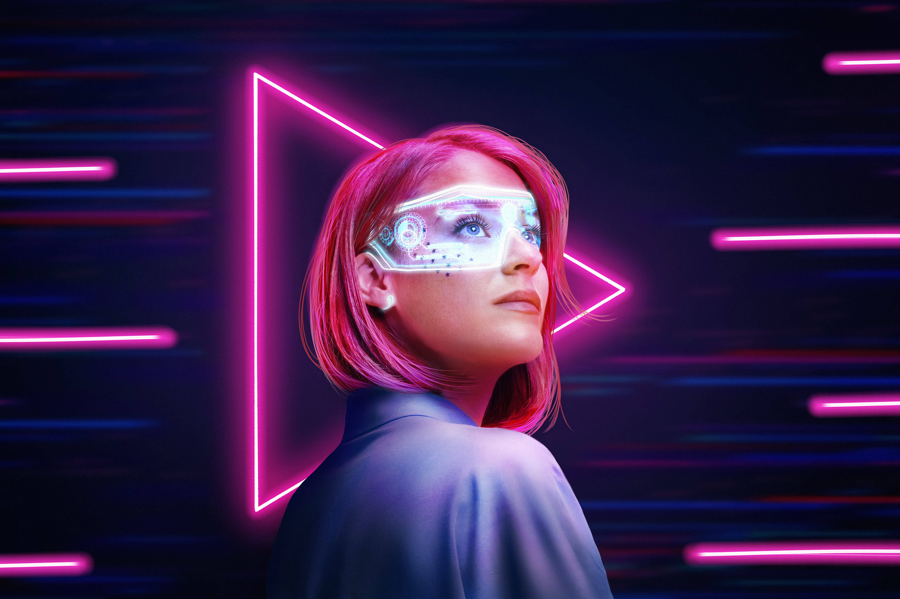

Google vai retirar antivírus do Chrome

BLOG
A internet tem passado por mudanças significativas ao longo dos anos, com empresas como Google e Microsoft dominando várias áreas virtuais.
A Web3 surge como uma ideia revolucionária para transformar essa realidade e tornar a internet mais ampla e descentralizada.
Diferente das gerações anteriores, que se concentravam em conectar pessoas e informações, a Web3 tem como objetivo descentralizar a internet e dar às pessoas mais controle sobre seus dados e relacionamentos online.
Ela funciona por meio de uma série de protocolos e tecnologias, como Ethereum, Polkadot e IPFS, que permitem a criação de redes e a execução de contratos inteligentes e programas automáticos.
Essas tecnologias permitem que as pessoas criem aplicativos e serviços que funcionam de forma autônoma e independente, sem a necessidade de intermediários.
A tecnologia blockchain é fundamental para criar esse ambiente, pois oferece um registro digital seguro, transparente e descentralizado. O blockchain costuma ser usado em criptomoedas, logística, votação eletrônica, gestão de identidade, entre outros.
A Web3 é especialmente importante em um mundo onde as empresas de tecnologia têm acesso a uma quantidade cada vez maior de dados pessoais.
Ela busca devolver o poder aos usuários, permitindo que eles tenham mais controle sobre suas informações e transações online.
Qual a diferença entre Web1, Web2 e Web3?
Entenda a diferença entre as gerações anteriores da internet:
Web1 – Foi a primeira geração da internet, que surgiu na década de 1990. Ela consistia basicamente em páginas estáticas, sem interação e com informações apresentadas de forma simples.
Web2 – Revolucionou a forma como as pessoas usam a internet. Nessa geração, a internet evoluiu para uma plataforma mais interativa, permitindo o surgimento de redes sociais, aplicativos de mensagens, serviços de streaming e outras ferramentas.
Web3 – Representa uma evolução ainda maior. Ela tem o potencial de transformar a internet em uma plataforma mais segura, transparente e democrática, onde as pessoas têm mais controle sobre seus dados e relacionamentos online.
A maior diferença entre as três gerações está na evolução do modelo de interação entre as pessoas e as informações online. A Web1 era baseada em páginas estáticas, a Web2 trouxe a interatividade e a colaboração, e a Web3 está descentralizando a internet.